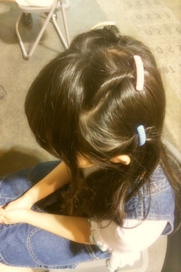
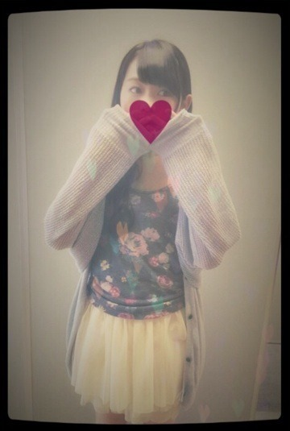
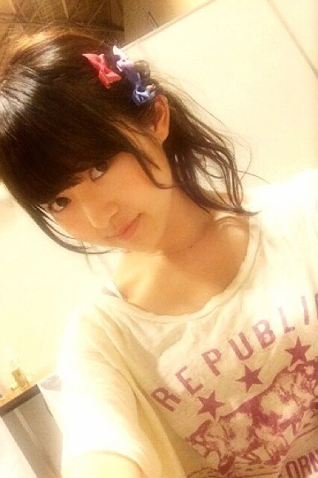
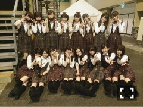
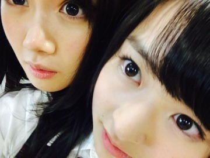

| 2014/05 20 Tue | 起きるのも瞬発力。 573回目 |
名古屋！
怒涛の2日間でしたわよ！
本当は全握の後にライブだったけど、
全握、個握、ライブ
の順にお話しします。
◇全国握手会

未央奈からこの髪型にしようと
提案がありおそろいにしたよ〜
髪型気づいてくれた方ありがとう！
月刊エンタメの感想ありがとう！
のんびりした握手で
未央奈のファンの方も
優しい方ばかりで楽しかった！
ありがとうございました。
◇個別握手会
1部

ジャンパースカート used
トップス
靴 GAIMO

服装がシンプルだから4か所ねじって
クレアーズのピンでとめたよ。
2部

カーディガン KBF
キャミソール ?
チュチュ wc
3部

Tワンピ ZURI
私服はこんな感じでした！
アンダーライブ、選抜発表、メール
プリンシパルについて
が多かったかな。
次もまりっからしくやってやれ！
と言ってくれて嬉しかった。
やってやるよ！
◇アンダースペシャルライブ
8thアンダーライブ千秋楽ということで
渋谷で好評だったユニットのカバーも
新しく披露させていただきました！
せっかちなかたつむり
孤独兄弟
ダンケシェーン
孤独兄弟は伊藤ちゃんずで
歌わせていただきました...
体調不良で出られるかわからない
状況だったのに、ライブに出た寧々。
ありがとう！
千秋楽で歌えて嬉しかった。
万全な状態でまた一緒に歌おうね！

8thの期間、このメンバーで
たくさんのことができて良かった！
ライブは選抜メンバーも二期生も
みんな見てくれました。
終わった後に写真や動画
送ってくれて、、
あーのぎのぎっていいなあ
と改めて思いました。
みんな大好き！
次のアンダーライブ決まりました。
今野さんから発表あった！！
六本木ブルーシアター
■6月28日（土）
①開場11:00 開演12:00
②開場16:00 開演17:00
■6月29日（日）
①開場11:00 開演12:00
②開場16:00 開演17:00
■7月11日（金）
開場17:00 開演18:00
■7月12日（土）
①開場11:00 開演12:00
②開場16:00 開演17:00
このステージを用意して
くださったからには
もっと良いライブを
アンダーにしかできないライブを
みなさんと一緒に作り上げたいです。
9thでも盛り上げて行きます！
ぜひともよろしくお願いします。

らりんハタチおめでとう！
この人、うざいくらいいじってくる。
いや、これ、みなさんの想像以上に
私へのいじり方半端ないんだよ笑
でもそういうところ好きなの！
ライブでもみんなを
まとめてくれてありがとう。
大人になっても変わらず
元気ならりんでいてねっ
最近1番好きな洋服屋さんはどこ？
最近、映画とかドラマ見た？
最近、映画とかドラマ見た？
▶︎古着の他に最近よく買うのは
ZURI、Another Edition、
Kastane、mysticかな。
ドラマは花子とアン、MOZU。
今見たい映画はヴィオレッタ！
以上！
おやすみなさい
まりか
コメント(553)
2014/05/20 00:06